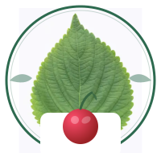
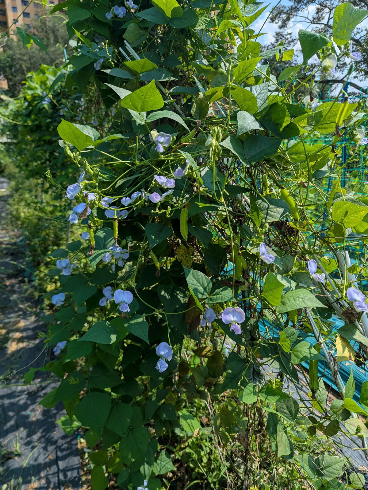

Greens N BerriesEverything you need to grow your own vegetables — from soil prep to harvest.
← Back to HomeVegetable gardening is one of the most rewarding ways to grow your own food. Whether you have a backyard plot, raised beds, or just a few containers on a balcony, you can harvest fresh, nutritious vegetables from your own space.
Choose vegetables that suit your climate and taste. Easy wins for beginners:
Tip: Grow what you love to eat. There's nothing like the taste of a sun-warmed tomato you grew yourself!

The superfood vine where every part is edible — leaves, flowers, pods, tubers, and seeds. Packed with protein and incredibly easy to grow.
Read the Guide →Harvest in the early morning when vegetables are crisp and full of moisture. Pick regularly to encourage continued production — especially for beans, zucchini, and tomatoes. Most vegetables taste best when harvested at their peak ripeness.
← Back to all guides